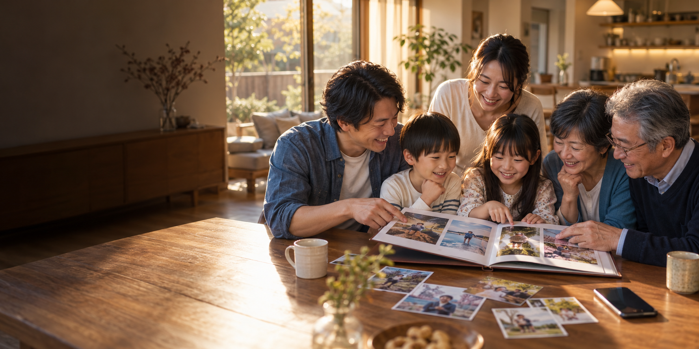

01 / SAVE
残しておく。
お気に入りの写真を、あとで見返したい場所へ。オンラインストレージの価値を生活の場面で紹介します。
PHOTO MEMORIES, MADE REAL
スマホの中で眠る写真を、何度でも見返したくなる一枚へ。
家族の時間が、暮らしの景色になる。
撮った写真には、まだ続きがある。
選んで、残して、誰かと見返して。
画面の中の思い出が、手に取れる時間に変わる。
HOZON PRINTの「プリント」と「オンラインストレージ」を、暮らしの場面から伝えるLPの提案です。
EVERYDAY, WORTH KEEPING

スワイプして、場面をめぐる →
THREE SIMPLE MOMENTS
お気に入りの写真を、あとで見返したい場所へ。オンラインストレージの価値を生活の場面で紹介します。
大切な一枚を見つけたら、プリントやフォトブックという選択肢へ。
手に取れる写真は、会話のきっかけになる。商品の先にある体験まで伝えます。
季節の見せ方・仮ビジュアル
年末の振り返り、年始の贈りもの、キャンペーン最終日の後押し。季節ごとに表情を変えるヘッダー案です。
HOZON PRINT SERVICES
公式サイトで案内されている3つのサービスを、目的別に紹介する想定です。
一枚を、飾る。贈る。手に取る。
もっと見る ↗何度でも開きたくなる、家族の一冊。
もっと見る ↗写真を保存して、次の楽しみへ。
もっと見る ↗※ボタンと詳細ページはデモ用の表示です。実際の導線は受注後に確定します。
CAMPAIGN CREATIVE / PREVIEW
募集内容にある複数サイズのバナーを想定した、方向性の見本です。特典・期日・価格は未確定のため記載していません。
ONE MORE LOOK. ONE MORE SMILE.
LP、季節別ヘッダー、バナーを一続きの体験として設計します。
キャンペーン条件と正式素材をいただいてから、実際のご案内に仕上げます。